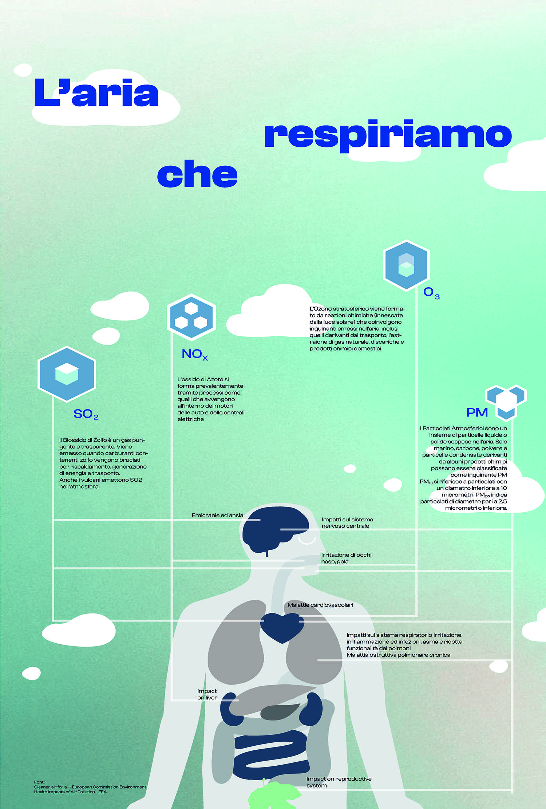
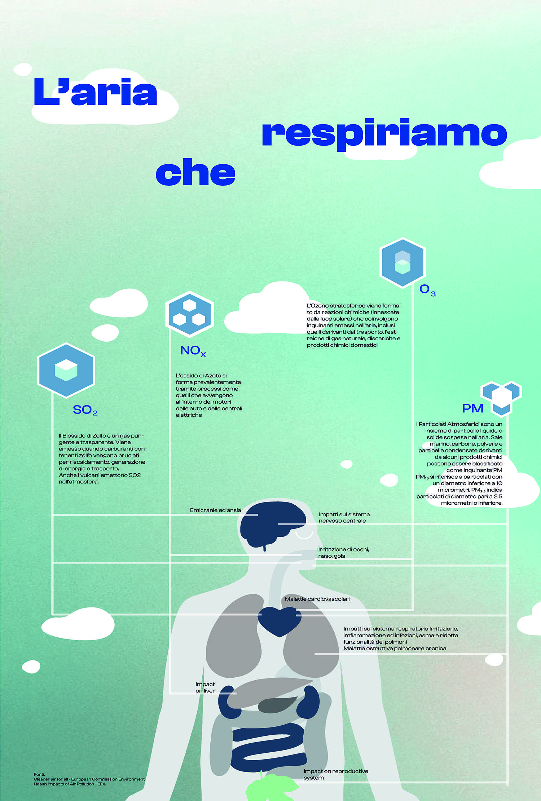

Qualità dell'aria¶
INQUINAMENTO DELL'ARIA - Cosa stiamo respirando¶
Video dei Cartoni Morti
Co-creare un futuro più salutare¶


 



L’aria che respiriamo contiene sostanze che possono impattare o meno la nostra salute a seconda della loro concentrazione. Spesso, si pensa che la colpa sia di un attore solo, oppure si pensa che la sfida sia troppo complessa per essere risolta, sopratutto da un singolo cittadino. Invece, qualcosa possiamo fare. Vi offriamo qui l’accesso a diverse carte interattive per acquisire importanti informazioni sul comportamento della città di Ferrara, in modo da diventare più consapevoli dei dati disponibili, e usarli al meglio per co-creare un futuro più salutare.
La Mobilità ad Alta Emissione Il settore dei trasporti è attualmente responsabile del 30% del totale nazionale delle emissioni di gas serra (circa 104 Mton CO2 eq nel 2018). Considerando la distribuzione delle emissioni per modalità di trasporto, quasi il 95% è dovuto al trasporto su strada, con un peso delle automobili pari a circa il 70%, seguito da camion e veicoli commerciali leggeri (insieme circa il 25%).
Fonte: MiTe: “Strategia Italiana di lungo termine sulla riduzione delle emissioni dei gas a effetto serra”, Gennaio 2021
L’agenzia europea dell’ambiente conferma: i trasporti continuano a costituire una fonte significativa di inquinamento atmosferico, soprattutto nelle città. Gli inquinanti atmosferici, come il particolato (PM2,5 e PM10) e il biossido di azoto (NO2), hanno un impatto significativo sulla salute umana e l’ambiente. Nonostante l’inquinamento atmosferico dovuto ai trasporti sia diminuito grazie all’introduzione di norme di qualità per i carburanti, alle norme EURO sulle emissioni dei veicoli e all’uso di tecnologie più pulite, le concentrazioni d’inquinanti atmosferici sono ancora troppo elevate. Le città italiane, inclusa Ferrara, stanno testando nuove alternative di mobilità per ridurre le emissioni. Avrete di certo incontrato le soluzioni della mobilità elettrica, dai veicoli ai monopattini e le bici. Diversi studi e ricerche stanno contribuendo all’elaborazione di un quadro conoscitivo sull’impatto di queste alternative che sembrano ancora lontane dall’obiettivo di azzerare le emissioni. Per approfondimenti, consultare “Micromobilità con monopattini elettrici”
Infine, oltre all’inquinamento, occorre considerare che automobili e altri veicoli a motore sono responsabili della quasi totalità degli incidenti stradali: dal 2004, ogni anno si sono registrati in media oltre 700 incidenti, con 900 feriti e 14 vittime (Fonte: Comune di Ferrara, Sistema Informativo Territoriale e Contatore degli incidenti stradali).
Inquinamento e Riscaldamento domestico¶
Più del 40% del PM10 primario è emesso dagli impianti domestici a biomassa in Emilia Romagna. Le regole sulle biomasse sono solo una delle 94 azioni del Piano Aria Integrato Regionale, che agisce sulle altre fonti di inquinamento atmosferico. Fonte: l’inventario regionale delle emissioni in atmosfera, realizzato mediante il software INEMAR (INventario EMissioni ARia) (2017), fonte: ARPAE
Che fare?¶
Ci serve ridurre i consumi energetici legati al riscaldamente e al raffrescamento ottimizando l’efficienza energetica delle nostre abitazioni e abandonare gli impianti termici a biomasssa. Diverse misure strutturali come il “Bonus 110%” sono oggi disponibili e favoriscono la transizione progressiva verso un parco residenziale a basse emissioni e l’adozione di sistemi più efficienti alimentati da fonti rinnovabili (es. pompe di calore elettriche). La Regione Emilia-Romagna si propone di contribuire al miglioramento della qualità dell’aria e all’incremento dell’efficienza energetica attraverso la sostituzione dei generatori di calore alimentati a biomassa legnosa. Consulta il sito di ARPAE per più informazioni .https://www.arpae.it/it/temi-ambientali/aria/liberiamo-laria/impianti-a-biomassa
Vuoi capire come i dati ti possono servire per migliorare la situazione? Abbiamo sviluppato diverse attività per : capire cosa raccontano i dati a scala locale, distinguere le relazioni causa-effetto, e identificare le opportunità di azione. In questa missione riconosciamo una ampia geografia della responsabilità.